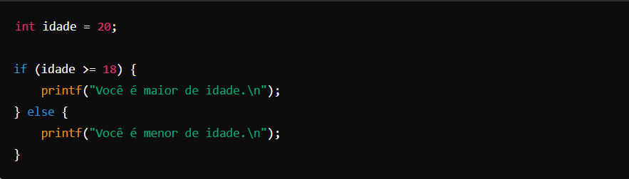
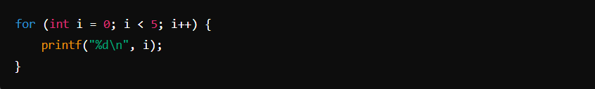
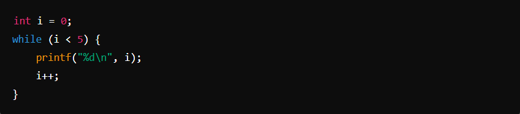
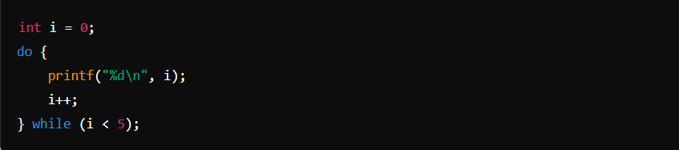
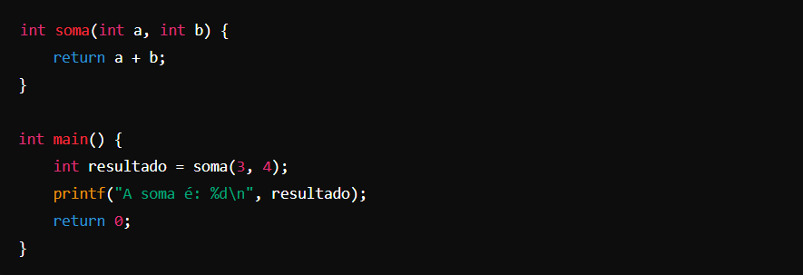
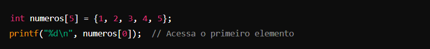
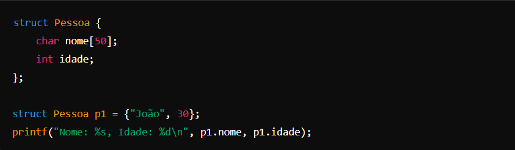
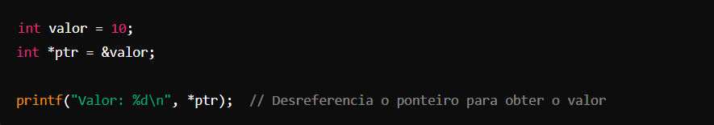
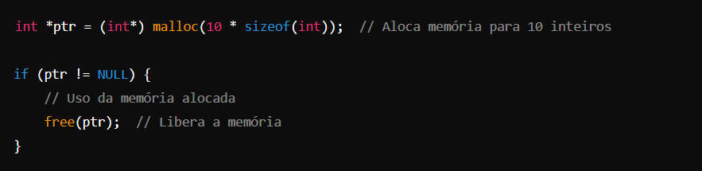
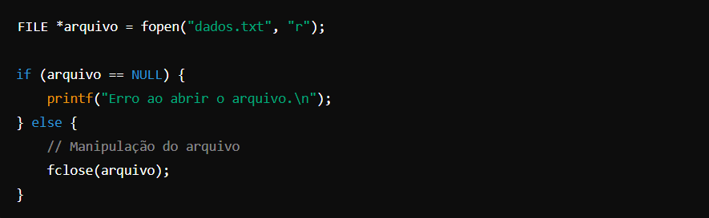

C -
A lógica de programação na linguagem C é baseada em princípios fundamentais que são comuns a muitas linguagens de programação, mas C é uma linguagem de baixo nível que oferece controle direto sobre o hardware e a memória. C foi criada por Dennis Ritchie na década de 1970 e é amplamente utilizada em sistemas operacionais, desenvolvimento de software embarcado e outras áreas onde o desempenho e a eficiência são cruciais. Aqui estão os principais conceitos e estruturas que compõem a lógica de programação em C:
Aqui estão os principais conceitos e estruturas que compõem a lógica de programação em C:
1. Sequência
As instruções em C são executadas na ordem em que aparecem, de cima para baixo, a menos que sejam alteradas por estruturas de controle.
2. Estruturas Condicionais
C usa if, else if, else, e switch para realizar decisões baseadas em condições.
Essas estruturas permitem que o código execute diferentes blocos dependendo do valor de variáveis ou expressões.

3. Laços de Repetição
C oferece estruturas de laço como for, while, e do...while, permitindo repetir blocos de código múltiplas vezes.
For Loop: Usado para iterar sobre uma sequência ou repetir um bloco de código um número específico de vezes.

While Loop: Executa um bloco de código enquanto uma condição for verdadeira.

Do...While Loop: Similar ao while, mas garante que o bloco de código seja executado pelo menos uma vez.

4. Funções
Em C, as funções permitem a modularização e reutilização de código.
Elas são definidas fora da função main() e podem ser chamadas de qualquer lugar do programa.

5. Manipulação de Dados e Estruturas de Dados
C suporta tipos de dados básicos como int, float, double, char, e também permite a
criação de estruturas de dados mais complexas, como arrays e structs.
Array: Uma coleção de itens do mesmo tipo, acessados por um índice.

Struct: Agrupamento de variáveis sob um único nome, permitindo a criação de tipos compostos.

6. Manipulação de Ponteiros
Ponteiros são uma característica central do C, permitindo o acesso direto e manipulação de endereços de memória.
Isso é poderoso, mas requer atenção para evitar erros como vazamentos de memória e acessos inválidos.

7. Alocação Dinâmica de Memória
C permite alocar e liberar memória em tempo de execução usando funções como malloc(), calloc(), realloc(), e free().

8. Estruturas de Controle de Erro
C não possui um sistema nativo de manipulação de exceções como linguagens mais modernas,
mas você pode usar códigos de retorno e verificar condições de erro manualmente.

C é uma linguagem compilada, o que significa que o código fonte é transformado em código binário executável pelo compilador.
O processo de vinculação ocorre quando o compilador junta todos os arquivos de código e bibliotecas necessários
para criar um executável final.
Esses conceitos formam a base da lógica de programação em C, permitindo criar programas que vão desde pequenos utilitários
até sistemas operacionais complexos e software embarcado.
A eficiência e o controle que o C oferece tornam-no uma escolha popular
para aplicações de alto desempenho e sensíveis a recursos.